안녕하새오, 길냥이애오.
 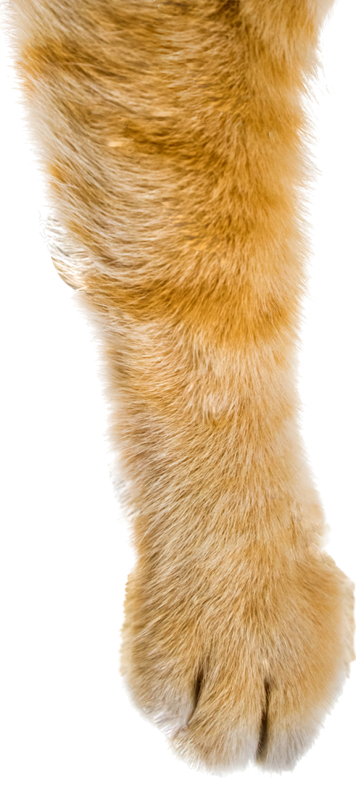
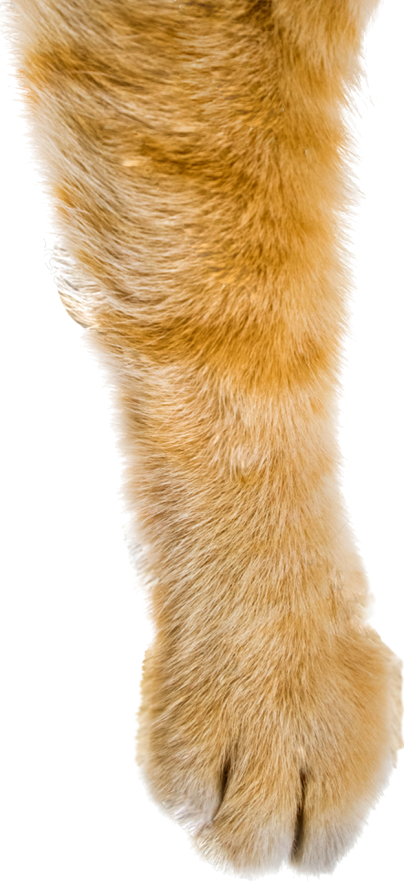
 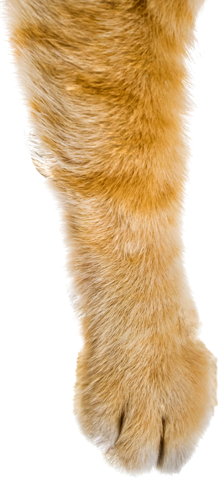
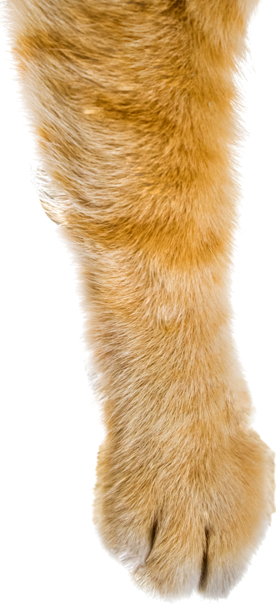
안녕하새오. 나는 길냥이애오. 나는 길에서 살아오.
가끔 나처럼 왼쪽 귀 끝을 살짝 자른 친구들은 중성화(tnr) 수술을 한거애오.
* 고양이를 이름에 맞게 올려주세오.
우리는 7가지 종류애오.
그리고 종류마다 특징이나 성격도 달라오.


 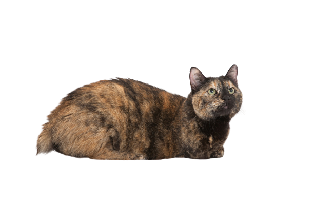
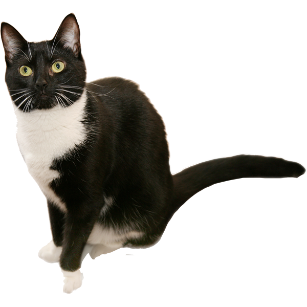
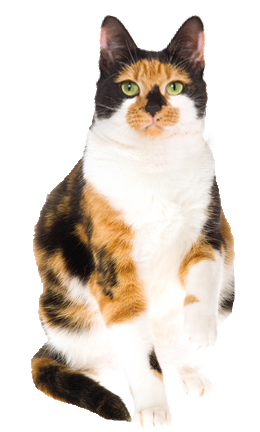
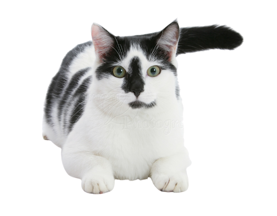
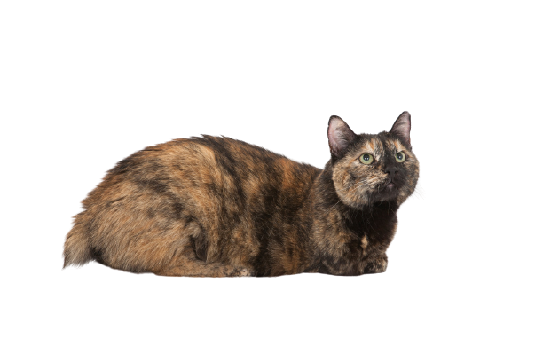
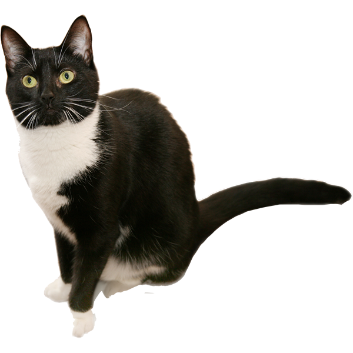
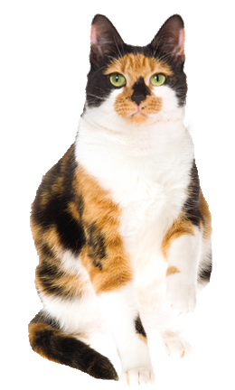
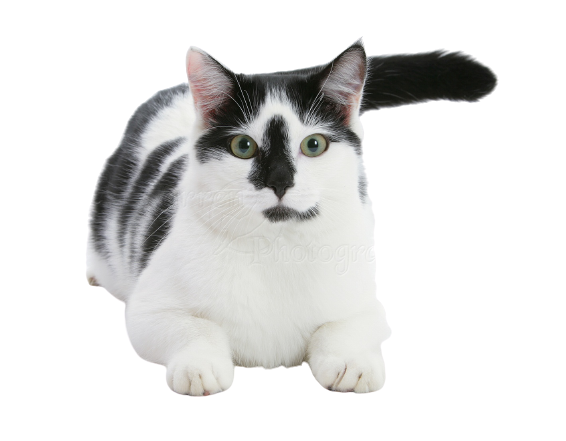
내가 사람을 피하는 이유는 나를 아프게 해오. 내 구역
에 맘대로 들어오던 녀석도
어제 사람한테 아야했더니
오늘부터 안보여오. 나는 아픈게 실어오.
 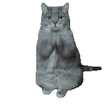
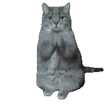
길가다 본 빛나는 상자에서 해외는 길고양이들이
사람을 안피해오.
길에서 사는 고양이로서, 너무 걱정되오.
그런데 저 동네는 길고양이들을 때리지 않아오..
부러워오.
 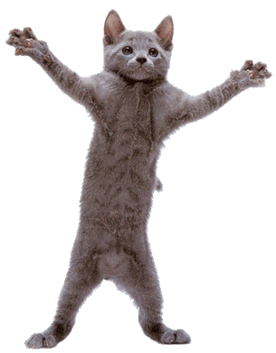
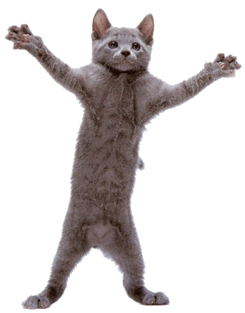
https://www.animals.or.kr/campaign/cat/1102
TNR은 길고양이를 안전한 방법으로 포획(Trap)한 뒤, 중성화 수술(Neuter)을
시켜 포획한 장소에 다시 방사(Return)하는 것으로 현재 가장 효과적이고,
인도적으로 길고양이 개체수를 조절하는 방식입니다.
우리에게 겨울은 가장 힘들어오.
너무 춥고, 배고파오.
그런데 어디서 겨울집이 나타낫어오.
그래도 이번 겨울은 덜 추울 것 같아오.
1 자동차에 탑승하기 전 보닛을 똑똑똑 두드려 사람이 왔음을 알린다.
2 탑승하기 전 차량 문을 두세 번 여닫아 소리를 낸다.
3 클랙슨을 두어 번 울린 후 고양이가 빠져나갈 수 있도록 충분히 시간을 준 다음 주행한다.
https://weekly.donga.com/List/3/08/11/1599760/1
우리 함께 살아오🐾